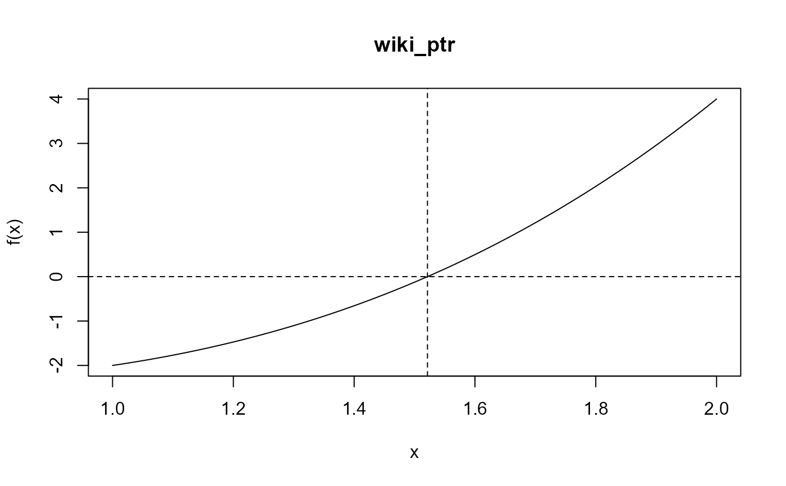
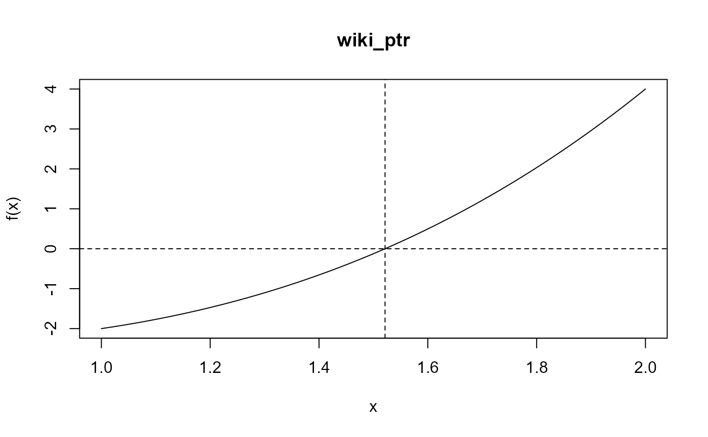

Performs one-dimensional root-finding using the ITP algorithm of
Oliveira and Takahashi (2021). The function itp searches an
interval [\(a\), \(b\)] for a root (i.e., a zero) of the
function f with respect to its first argument. Each iteration
results in a bracketing interval for the root that is narrower than the
previous interval. If the function is discontinuous then a point of
discontinuity at which the function changes sign may be found.
Arguments
- f
An R function or an external pointer to a C++ function. For the latter see the article Passing user-supplied C++ functions in the Rcpp Gallery. The function for which the root is sought.
- interval
A numeric vector
c(a, b)of length 2 containing the end points of the interval to be searched for the root. The function values at the end points must be of opposite signs.- ...
Additional arguments to be passed to
f.- a, b
An alternative way to set the lower and upper end points of the interval to be searched. The function values at these end points must be of opposite signs.
- f.a, f.b
The values of
f(a)andf(b), respectively.- epsilon
A positive numeric scalar. The desired accuracy of the root. The algorithm continues until the width of the bracketing interval for the root is less than or equal to
2 * epsilon.- k1, k2, n0
Numeric scalars. The values of the tuning parameters \(\kappa\)1, \(\kappa\)2, \(n\)0. See Details.
Value
An object (a list) of class "itp" containing the following
components:
- root
the location of the root, calculated as
(a+b)/2, where [a, b] is the bracketing interval after convergence.- f.root
the value of the function evaluated at root.
- iter
the number of iterations performed.
- a,b
the end points of the bracketing interval [
a, b] after convergence.- f.a,f.b
the values of function at
aandbafter convergence.- estim.prec
an approximate estimated precision for
root, equal to the half the width of the final bracket for the root.
If the root occurs at one of the input endpoints a or b then
iter = 0 and estim.prec = NA.
The returned object also has the attributes f (the input R function
or pointer to a C++ function f), f_args (a list of
additional arguments to f provided in ...), f_name
(a function name extracted from as.character(substitute(f)) or the
form of the R function if f was not named), used_c (a
logical scalar: FALSE, if f is an R function and TRUE
if f is a pointer to a C++ function) and input_a and
input_b (the input values of a and b). These
attributes are used in plot.itp to produce a plot of the
function f over the interval (input_a, input_b).
Details
Page 8 of Oliveira and Takahashi (2021) describes the ITP
algorithm and the roles of the tuning parameters
\(\kappa\)1,
\(\kappa\)2 and
\(n\)0. The algorithm is
described using pseudocode. The Wikipedia entry for the
ITP method provides
a summary. If the input function f is continuous over the interval
[a, b] then the value of f evaluated at the estimated
root is (approximately) equal to 0. If f is discontinuous over the
interval [a, b] then the bracketing interval returned after
convergence has the property that the signs of the function f at
the end points of this interval are different and therefore the estimated
root may be a point of discontinuity at which the sign of f
changes.
The ITP method requires at most
\(n\)max = \(n\)1/2 +
\(n\)0 iterations,
where \(n\)1/2 is the
smallest integer not less than log2((b-a) /
2\(\epsilon\)).
If \(n\)0 = 0 then the
ITP method will require no more iterations than the bisection method.
Depending on the function f, setting a larger value for
\(n\)0, e.g. the default
setting \(n\)0=1 used by
the itp function, may result in a smaller number of iterations.
The default values of the other tuning parameters
(epsilon = 1e-10, k1 = 0.2 / (b - a), k2 = 2) are set based on
arguments made in Oliveira and Takahashi (2021).
References
Oliveira, I. F. D. and Takahashi, R. H. C. (2021). An Enhancement of the Bisection Method Average Performance Preserving Minmax Optimality, ACM Transactions on Mathematical Software, 47(1), 1-24. doi:10.1145/3423597
Examples
#### ----- The example used in the Wikipedia entry for the ITP method
# Supplying an R function
wiki <- function(x) x ^ 3 - x - 2
itp(wiki, c(1, 2), epsilon = 0.0005, k1 = 0.1, n0 = 1)
#> function: wiki
#> root f(root) iterations
#> 1.521 7.698e-06 5
# The default setting (with k1 = 0.2) wins by 1 iteration
wres <- itp(wiki, c(1, 2), epsilon = 0.0005, n0 = 1)
wres
#> function: wiki
#> root f(root) iterations
#> 1.521 0.0001315 4
plot(wres)
 # Supplying an external pointer to a C++ function
wiki_ptr <- xptr_create("wiki")
wres_c <- itp(f = wiki_ptr, c(1, 2), epsilon = 0.0005, k1 = 0.1)
wres_c
#> function: wiki_ptr
#> root f(root) iterations
#> 1.521 7.698e-06 5
plot(wres_c)

#### ----- Some examples from Table 1 of Oliveira and Takahashi (2021)
### Well-behaved functions
# Lambert
lambert <- function(x) x * exp(x) - 1
itp(lambert, c(-1, 1))
#> function: lambert
#> root f(root) iterations
#> 0.5671 2.048e-12 8
# Trigonometric 1
# Supplying an R function
trig1 <- function(x, root) tan(x - root)
itp(trig1, c(-1, 1), root = 1 / 10)
#> function: trig1
#> root f(root) iterations
#> 0.1 -8.238e-14 8
# Supplying an external pointer to a C++ function
trig1_ptr <- xptr_create("trig1")
itp(f = trig1_ptr, c(-1, 1), root = 1 / 10)
#> function: trig1_ptr
#> root f(root) iterations
#> 0.1 -8.238e-14 8
# Logarithmic
logarithmic <- function(x, shift) log(abs(x - shift))
itp(logarithmic, c(-1, 1), shift = 10 /9)
#> function: logarithmic
#> root f(root) iterations
#> 0.1111 8.991e-13 7
# Linear
linear <- function(x) x
# Solution in one iteration
itp(linear, c(-1, 1))
#> function: linear
#> root f(root) iterations
#> 0 0 1
# Solution at an input endpoint
itp(linear, c(-1, 0))
#> function: linear
#> root f(root) iterations
#> 0 0 0
### Ill-behaved functions
## Non-simple zero
# Polynomial 3
poly3 <- function(x) (x * 1e6 - 1) ^ 3
itp(poly3, c(-1, 1))
#> function: poly3
#> root f(root) iterations
#> 1e-06 -1.25e-13 36
# Using n0 = 0 leads to fewer iterations, in this example
poly3 <- function(x) (x * 1e6 - 1) ^ 3
itp(poly3, c(-1, 1), n0 = 0)
#> function: poly3
#> root f(root) iterations
#> 1e-06 -6.739e-14 35
## Discontinuous
# Staircase
staircase <- function(x) ceiling(10 * x - 1) + 1 / 2
itp(staircase, c(-1, 1))
#> function: staircase
#> root f(root) iterations
#> 7.404e-11 0.5 31
## Multiple roots
# Warsaw
warsaw <- function(x) ifelse(x > -1, sin(1 / (x + 1)), -1)
# Function increasing over the interval
itp(warsaw, c(-1, 1))
#> function: warsaw
#> root f(root) iterations
#> -0.6817 -5.472e-11 11
# Function decreasing over the interval
itp(warsaw, c(-0.85, -0.8))
#> function: warsaw
#> root f(root) iterations
#> -0.8408 6.494e-11 8
# Supplying an external pointer to a C++ function
wiki_ptr <- xptr_create("wiki")
wres_c <- itp(f = wiki_ptr, c(1, 2), epsilon = 0.0005, k1 = 0.1)
wres_c
#> function: wiki_ptr
#> root f(root) iterations
#> 1.521 7.698e-06 5
plot(wres_c)

#### ----- Some examples from Table 1 of Oliveira and Takahashi (2021)
### Well-behaved functions
# Lambert
lambert <- function(x) x * exp(x) - 1
itp(lambert, c(-1, 1))
#> function: lambert
#> root f(root) iterations
#> 0.5671 2.048e-12 8
# Trigonometric 1
# Supplying an R function
trig1 <- function(x, root) tan(x - root)
itp(trig1, c(-1, 1), root = 1 / 10)
#> function: trig1
#> root f(root) iterations
#> 0.1 -8.238e-14 8
# Supplying an external pointer to a C++ function
trig1_ptr <- xptr_create("trig1")
itp(f = trig1_ptr, c(-1, 1), root = 1 / 10)
#> function: trig1_ptr
#> root f(root) iterations
#> 0.1 -8.238e-14 8
# Logarithmic
logarithmic <- function(x, shift) log(abs(x - shift))
itp(logarithmic, c(-1, 1), shift = 10 /9)
#> function: logarithmic
#> root f(root) iterations
#> 0.1111 8.991e-13 7
# Linear
linear <- function(x) x
# Solution in one iteration
itp(linear, c(-1, 1))
#> function: linear
#> root f(root) iterations
#> 0 0 1
# Solution at an input endpoint
itp(linear, c(-1, 0))
#> function: linear
#> root f(root) iterations
#> 0 0 0
### Ill-behaved functions
## Non-simple zero
# Polynomial 3
poly3 <- function(x) (x * 1e6 - 1) ^ 3
itp(poly3, c(-1, 1))
#> function: poly3
#> root f(root) iterations
#> 1e-06 -1.25e-13 36
# Using n0 = 0 leads to fewer iterations, in this example
poly3 <- function(x) (x * 1e6 - 1) ^ 3
itp(poly3, c(-1, 1), n0 = 0)
#> function: poly3
#> root f(root) iterations
#> 1e-06 -6.739e-14 35
## Discontinuous
# Staircase
staircase <- function(x) ceiling(10 * x - 1) + 1 / 2
itp(staircase, c(-1, 1))
#> function: staircase
#> root f(root) iterations
#> 7.404e-11 0.5 31
## Multiple roots
# Warsaw
warsaw <- function(x) ifelse(x > -1, sin(1 / (x + 1)), -1)
# Function increasing over the interval
itp(warsaw, c(-1, 1))
#> function: warsaw
#> root f(root) iterations
#> -0.6817 -5.472e-11 11
# Function decreasing over the interval
itp(warsaw, c(-0.85, -0.8))
#> function: warsaw
#> root f(root) iterations
#> -0.8408 6.494e-11 8